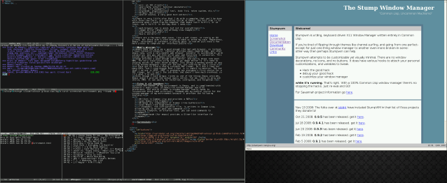

{kind=link}

This will be a portal to my projects on github.com, and other randomness.
To most users, a computer's user interface is the most important part of a computer. For instance, the next time you read a review of a GNU/Linux distribution, notice how many screenshots there are. Why are there so many? Does the distribution package KDE? GNOME? XFCE? If so, than links should be placed to those desktop environments' websites, unless the distribution makes a major change only availble to it's users (probably should be done upstream though). But still, review after review, we see screenshots after screenshots. The point I always read about Windows 7, is that it looks so much like KDE. What I'm trying to say is that everyone is caught up in appearance, but not functionality.
I am very interested in the way that people interact with computers. It is very fascinating to me. So after weeks and months and years spent trying to find the perfect desktop enviroment or window manager for my visual taste, I finally realized that that is not the most important part. It's the way your DE/WM interacts with your software that is important. The way that it stays out of your way. The way it extends and collapses to fit your needs, not your hardware's capabilities.
The first part of the user interface puzzle is Emacs. Plenty of you will not agree with this, and that is ok. But for me, most of my time is spent in Emacs, so naturally, it should be the program most worried about. It should be the program that my entire computing environment wraps itself around. So when deciding on what else I needed to complete my environment, first I need to decide what I need that Emacs can give me.
There is very little else that I do with a computer that can't be done with those few tools, all operating inside of Emacs. The next step is to determine what I need from my computer that Emacs can't fulfill, or at least, can't fulfill in the way that I need.
There are a few more edge cases, like a pdf viewer, or rarely an IM client, but those aren't used enough to make or break my case. Regardless, Emacs' assortment of software is pretty good. So now we just need a few more pieces to complete our interface puzzle.
Emacs does not give me a good enough (for me) web browser, so instead, I have turend to Conkeror. Conkeror provides emacs keybindings, and other emacs-isms, with a very modern web browser. Conkeror is customizable, with javascript, and you can even write your own functions in javascript.
Gimp provides a good enough image editor, and easily drops into most WMs. The only issue with using Gimp as an image editor is it's need to display across at least three windows. This throws a monkey wrench at any tiling window managers right off the bat, but nothing we can't solve.
I have yet to find a really suitable PDF viewer, as I don't read too many PDFs, but I read enough that I feel it is import to mention. The one that I do use is XPDF. XPDF is probably not everyone's first choice for a PDF viewer, but it get's the job done, and doesn't have much overhead, so it's what I've got.
Even though I have mingus listed as one of the things Emacs provides, Emacs doesn't provide the actual music server. For me, there is only one choice, MPD. It can easily be installed, configured, and forgotten.
Since the center of my environment is Emacs, and is complimented with Conkeror's emacs-isms, an Emacs-ish window manager would be preferable. The choice I made in window manager really needs to incorporate these same principals. Stumpwm was my natural choice for the window manager of my environment because it provides the following features.
Here is a screenshot of the writing of this file
I feel that with this environment, the need for a traditional Desktop Environment is almost completely eliminated. Xiomacs appears to be a project to add some more desktop environment features to Stumpwm, however, I'm much too lazy to get it working as it is in pre-alpha stage, but the screenshots look fancy.